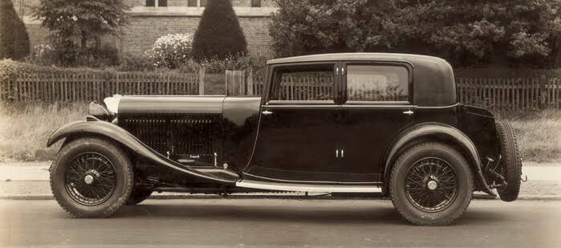
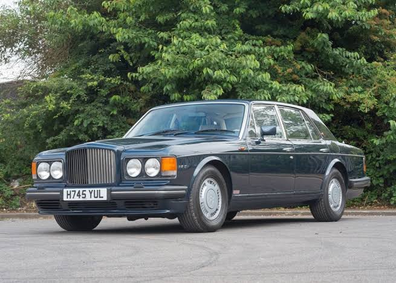

| Company name | Bentley Motors Limited |
|---|---|
| Founder | H.M.Bentley; W.O.Bentley |
| Founded on | 18 January 1919, Cricklewood, London, United Kingdom |
| Headquarters | Crewe, England |
| Parent organization | Volkswagen Group |
| Chairman | Adrian Hallmark |
| CEO | Wolfgang Dürheimer |
| No.of production plants | 1 |
| Customer service | 00 44 1270 535032 |
Bentley Motors Limited is a British manufacturer and marketer of luxury cars and SUVs—and a subsidiary of the Volkswagen Group since 1998.Headquartered in Crewe, England, the company was founded as Bentley Motors Limited by W. O. Bentley in 1919 in Cricklewood, North London—and became widely known for winning the 24 Hours of Le Mans in 1924, 1927, 1928, 1929 and 1930.
From W.O. Bentley, who founded Bentley Motors in 1919, to the current team of over 4,000 dedicated employees, the company’s extraordinary cars have always been designed and built by exceptional people using only the finest of materials.They have always been driven by exceptional people, too. From the passionate Bentley Boys and Girls who raced the cars in the 1920s, encouraging W.O. Bentley to achieve ever greater feats of engineering, to the visionary Bentley owners of today, Bentley drivers help to shape the world around them.
The unique relationship between those who create the cars and those who drive them has helped create an enthralling story unlike any other. Explore the stories below to find out more.